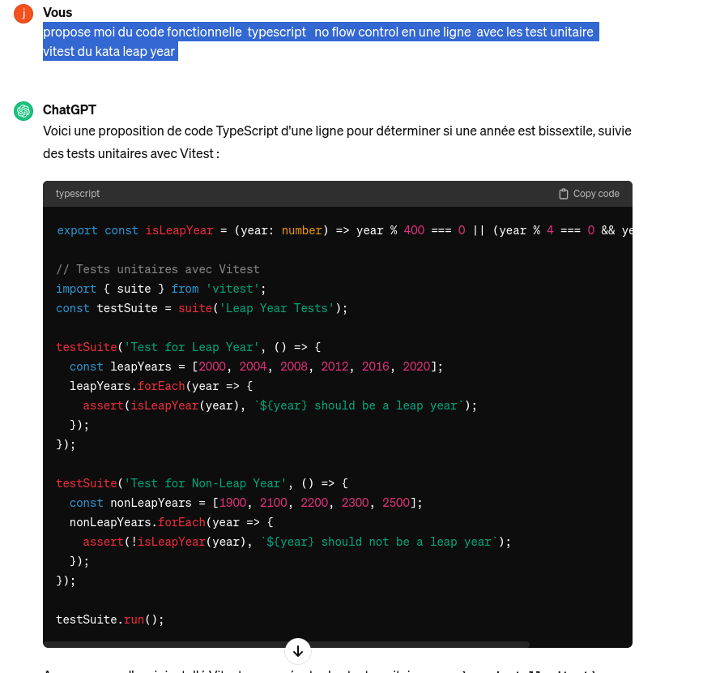

Avant 1582, le calendrier julien considérait chaque année divisible par 4 comme une année bissextile. Cependant, au 16ème siècle, il est apparu que le calendrier avait dévié de l'année solaire d'environ 10 jours. Le calendrier grégorien a été introduit pour corriger cela, en sautant certains jours du calendrier julien et en ajustant les règles des années bissextiles.
L'objectif de l'utilisateur est de déterminer si une année est bissextile pour planifier un jour supplémentaire le 29 février lors de ces années spéciales.
Critères d'acceptation:- Toutes les années divisibles par 400 sont des années bissextiles (par exemple, 2000).
- Toutes les années divisibles par 100 mais pas par 400 ne sont pas des années bissextiles (par exemple, 1700, 1800, 1900, et 2100).
- Toutes les années divisibles par 4 mais pas par 100 sont des années bissextiles (par exemple, 2008, 2012, 2016).
- Toutes les années qui ne sont pas divisibles par 4 ne sont pas des années bissextiles (par exemple, 2017, 2018, 2019).
tests
import { beforeEach, describe, expect, test } from "vitest";
import { Leap } from './leap';
describe('Leap', () => {
let leap: Leap;
beforeEach(() => {
leap = new Leap();
});
test('Année non divisible par 4 dans une année commune', () => {
expect(leap.isLeapYear(2015)).toBe(false);
});
test('Année divisible par 2 mais pas divisible par 4 dans une année commune', () => {
expect(leap.isLeapYear(1970)).toBe(false);
});
test('Année divisible par 4 mais pas divisible par 100 dans une année bissextile', () => {
expect(leap.isLeapYear(1996)).toBe(true);
});
test('Année divisible par 4 et par 5 dans une année bissextile', () => {
expect(leap.isLeapYear(1960)).toBe(true);
});
test('Année divisible par 100 mais pas divisible par 400 dans une année commune', () => {
expect(leap.isLeapYear(2100)).toBe(false);
});
test("Année divisible par 100 mais pas divisible par 3 n'est pas une année bissextile", () => {
expect(leap.isLeapYear(1900)).toBe(false);
});
test('Année divisible par 400 dans une année bissextile', () => {
expect(leap.isLeapYear(2000)).toBe(true);
});
test('Année divisible par 400 mais pas divisible par 125 est une année bissextile', () => {
expect(leap.isLeapYear(2400)).toBe(true);
});
test('Année divisible par 200 mais pas divisible par 400 dans une année commune', () => {
expect(leap.isLeapYear(1800)).toBe(false);
});
});
Test Red
Cette approche naïve utilise des conditions imbriquées pour vérifier si une année est bissextile, en vérifiant d'abord la divisibilité par 4, puis par 100, et enfin par 400.
export class Leap {
isLeapYear(year: number): boolean {
if (year % 4 === 0) {
if (year % 100 !== 0) {
return true;
} else {
if (year % 400 === 0) {
return true;
}
}
}
return false;
}
}
Test Green
Contrainte
- Immutabilité : Vous devez utiliser des structures de données immuables dans votre implémentation.
- Primitive Obsession : Vous devez éviter d'utiliser des types primitifs et préférer les types d'objet.
-
No Flow Control : Évitez autant que possible les structures de contrôle de flux telles que les boucles
foretwhile. Préférez les méthodes de programmation fonctionnelle telles quemap,filteretreduce.
example de solution
export class Leap {
isLeapYear(year: number): boolean {
return (year % 4 === 0 && (year % 100 !== 0 || year % 400 === 0));
}
}test avec paradigme fonctionnel
import { describe, expect, test } from 'vitest';
import { isLeapYear } from './isLeapYear';
describe('Leap', () => {
test('Année non divisible par 4 dans une année commune', () => {
expect(isLeapYear(2015)).toBe(false);
});
test('Année divisible par 2 mais pas divisible par 4 dans une année commune', () => {
expect(isLeapYear(1970)).toBe(false);
});
test('Année divisible par 4 mais pas divisible par 100 dans une année bissextile', () => {
expect(isLeapYear(1996)).toBe(true);
});
test('Année divisible par 4 et par 5 dans une année bissextile', () => {
expect(isLeapYear(1960)).toBe(true);
});
test('Année divisible par 100 mais pas divisible par 400 dans une année commune', () => {
expect(isLeapYear(2100)).toBe(false);
});
test("Année divisible par 100 mais pas divisible par 3 n'est pas une année bissextile", () => {
expect(isLeapYear(1900)).toBe(false);
});
test('Année divisible par 400 dans une année bissextile', () => {
expect(isLeapYear(2000)).toBe(true);
});
test('Année divisible par 400 mais pas divisible par 125 est une année bissextile', () => {
expect(isLeapYear(2400)).toBe(true);
});
test('Année divisible par 200 mais pas divisible par 400 dans une année commune', () => {
expect(isLeapYear(1800)).toBe(false);
});
});
solution fonctionnelle
export const isLeapYear = (number: number) =>
number % 4 === 0 &&
(number % 100 !== 0 || number % 400 === 0);
Avantages de l'approche avec une expression lambda concise
Cette fonction utilise une expression lambda concise pour déterminer si une année donnée est bissextile ou non. Voici les avantages de cette approche :
- Lisibilité améliorée : L'expression concise est facile à comprendre et à lire. Elle exprime clairement la logique derrière la détermination des années bissextiles.
- Moins de lignes de code : En utilisant une seule ligne de code, la fonction est plus concise et réduit la quantité de code à écrire et à maintenir.
- Performance potentielle améliorée : En réduisant le nombre de calculs et de conditions, cette fonction peut potentiellement être plus performante que des approches plus complexes, bien que dans ce cas, la différence soit négligeable.
- Maintenabilité accrue : La simplicité de l'expression rend la fonction plus facile à maintenir. Les futurs développeurs peuvent rapidement comprendre ce que fait la fonction sans avoir à déchiffrer des blocs de code plus longs.
- Compatibilité avec TypeScript : Cette approche est parfaitement compatible avec TypeScript, ce qui permet de tirer parti des avantages de ce langage, comme le typage statique pour une meilleure robustesse du code.
En résumé, cette façon de coder est concise, claire et efficace, ce qui en fait un choix solide pour cette fonction relativement simple.
Perspective qui pique
Si on demandait a ChatGpt
propose moi du code fonctionnelle typescript no flow control en une ligne avec les tests unitaires vitest du kata leap year
